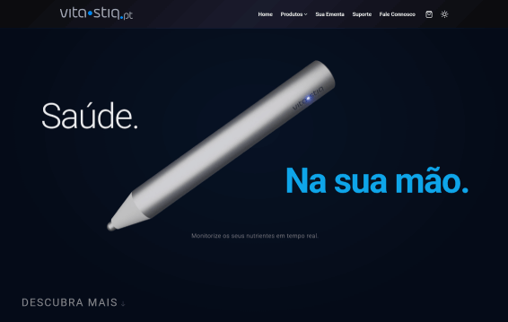
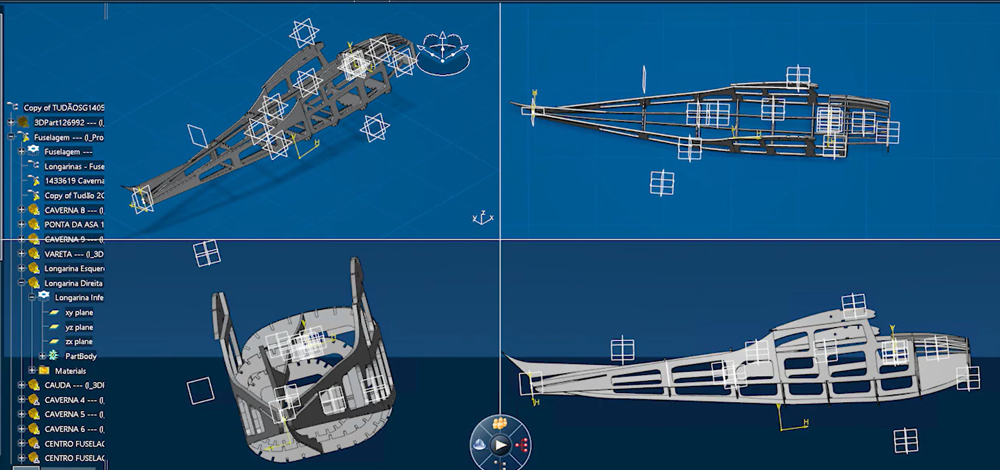
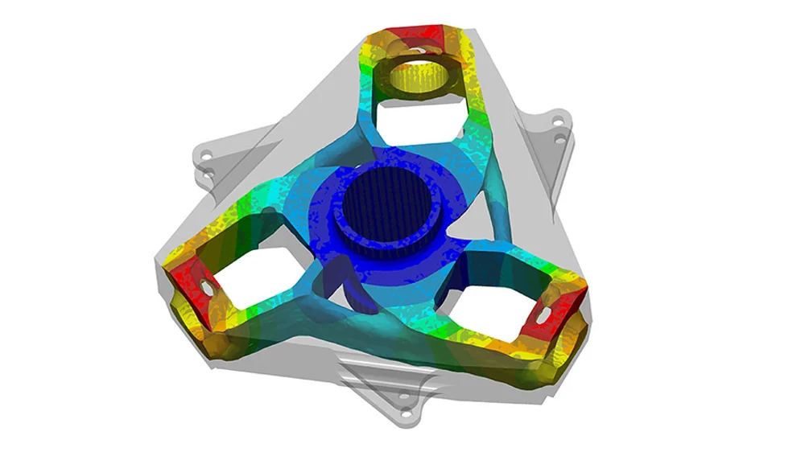
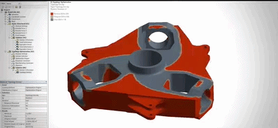
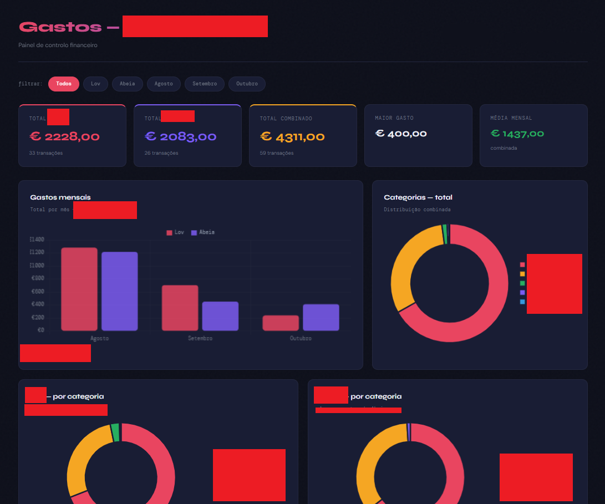
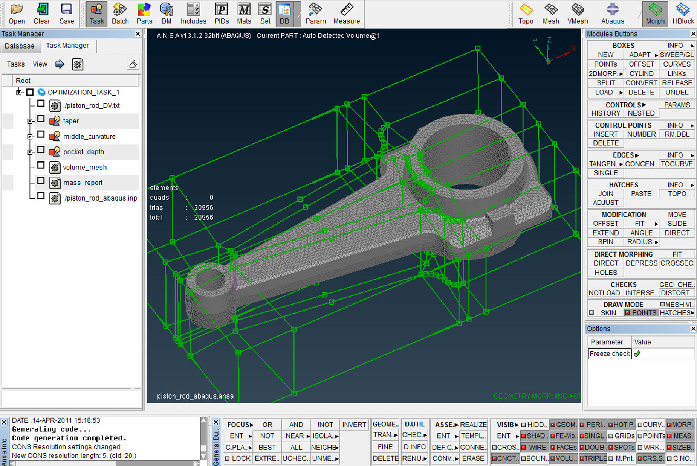
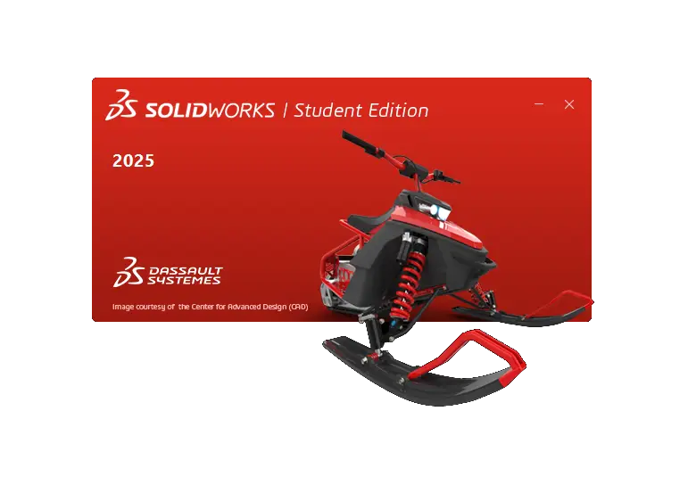

Vitor Ladeira
Aspiring aerospace engineer with international academic and professional experience, combining strong analytical ability, adaptability, and teamwork.
About
Hi! I’m an aspiring aerospace engineer with international academic and professional experience. I'm driven by my own curiosity and a passion for problem-solving. I’m currently studying Aerospace Engineering at the Universidade do Minho, after beginning my journey in Aeronautical Engineering in Brazil. Along the way, I’ve developed strong analytical skills, adaptability, and a collaborative mindset. Through internships and international experiences, I’ve gained hands-on experience in data management, CAD modeling, and working in tandem with diverse, cross-cultural teams.
Projects

Website Development
Web Development
Some personal and some joint websites built with HTML5, TailwindCSS, and modern web design principles. Showcasing professional work and expertise. Examples include:
Vitastiq.pt |
Teoricar.com.br |
VTEC.com.br (WIP)


Cessna Aircraft CAD Model
CAD Modeling | CATIA V6
Detailed 3D CAD model of a Cessna aircraft designed in CATIA V6 for academic project. Demonstrates proficiency in parametric design and aerospace component modeling.


FEM Structural Analysis
FEM Simulation | Autodesk Fusion
Finite Element Method (FEM) simulation and structural analysis performed in Autodesk Fusion. Analyzing stress distribution and preparing for topology optimization for academic project.
Skills
Certifications & Training

PBI Descobridor
Power BI Training
Comprehensive training in Power BI for data analysis and visualization.

ANSA Training
Mesh modeling for dynamic simulation
Training in mesh modeling for CFD and FEM simulations.

Intermediate SolidWorks Course
Modeling and simulation preparation
Intermediate course for modeling and simulation in SolidWorks, provided by the University.
Experience & Education
Education
B.Sc. (Licenciatura) in Aerospace Engineering
Universidade do Minho — 09/2025 – Present
Currently pursuing a degree in Aerospace Engineering.
Internship
Administrative Intern
CREA-MG, Brazil — 05/2024 – 02/2025
Supported government activities and procedural analysis. Assisted in document drafting, formatting, and data organization. Maintained internal spreadsheets and optimized workflows with MS PowerAutomate.
Internship
Administrative Intern
Woodgrove Consultoria, Brazil — 04/2023 – 09/2023
Conducted data analysis and generated management reports using Power BI. Coordinated travel bookings, visas, and insurance processes. Managed financial and corporate travel data.
Education
B.Sc. in Aeronautical Engineering
Pontifical Catholic University of Minas Gerais — 08/2022 – 06/2025
Prior studies in Aeronautical Engineering, before transferring to Portugal.
Experience
High School Exchange Program (J-1 Program, USA)
Albuquerque, USA — 2021–2022
Finished senior year in the USA, in a cultural exchange program, improving language skills and gaining international experience.
Experience
Assistant, Family Tourism Business
Lta Viagens e Turismo, Brazil — 2018 – 2021
Assisted in family business. Corporate and personal travel management, Emphasis on customer service with flight, hotel, and tour bookings. Produced promotional advertisements/publications and local travel guides.
Available for internships & part-time collaborations.